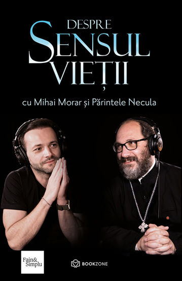

Despre Sensul Vieții
Un dialog sincer și necesar despre puterea cuvintelor, puterea oamenilor și puterea Lui Dumnezeu, care îți oferă reperele de care ai nevoie într-o lume în schimbare.
44 Lei
Un dialog sincer și necesar despre puterea cuvintelor, puterea oamenilor și puterea Lui Dumnezeu, care îți oferă reperele de care ai nevoie într-o lume în schimbare.
Cuvintele Părintelui Necula creează punți între religii, între credincioși și atei, aducând oamenii mai aproape de marile adevăruri ale învățăturilor creștine. Într-o epocă a deznădejdii și a fricii, acest dialog dintre Mihai Morar și Părintele Necula abordează fără teamă subiectele dificile ale actualității. Fiecare răspuns oferit la întrebările pline de miez adresate de Mihai Morar încurajează cititorii să-și păstreze întotdeauna speranța și credința. Astfel, pagină cu pagină, se conturează un alt mod de a privi lumea și problemele sale, adoptând o perspectivă plină de înțelegere, iubire și încredere în puterea și frumusețea Lui Dumnezeu.
„Ce ar mai fi de zis? O vom face probabil în timpul cât Dumnezeu ne va îngădui să o mai facem. Când vom fi plecați, undeva, într-un colț de bibliotecă și această rogojină de carte pe care ne-am lăsat sufletele la vedere. Mulțumesc, Mihai, pentru prietenie. Și celor ce ne sunt prieteni ori dușmani, deopotrivă, sănătate. Nu mai e vreme de ură. De mușcat din morminte. Din văzduh, din bunici și părinți. E vremea să căutăm sens vieților noastre. ”Cărțile sunt televizorul oamenilor deștepți și mă bucură atunci când cineva mai construiește și astfel de televizoare. Părintele Necula și Mihai par să vină din lumi pe cât de diferite pe atât de apropiate și, cum amândoi îmi sunt apropiați, sunt sigur că veți găsi în rândurile scrise de ei și voi, apropierea. Toate cărțile, oricare ar fi ele, au măcar un cuvânt despre iubire. Despre asta e cartea lor. Pentru că cel ce nu iubeşte n-a cunoscut pe Dumnezeu, pentru că Dumnezeu este iubire (I Ioan 4,8).
Lărgiți și voi inimile voastre
Mihai Morar: Cum ne putem întări întâi încrederea în oameni, cum ne putem întări credința? Pentru
că eu
cred că suntem într-o perioadă în care lumea e-ntr-o gravă suferință și fiindcă s-au dărâmat temeliile
acestea, ale încrederii.
Părintele Constantin Necula: Cred că primul exercițiu pe care trebuie să-l facem e cel de răbdare! E cel de răbdare, da. Să avem răbdare, cu noi, cu cei de lângă noi! Are Părintele Zaharia Zaharou un titlu la o carte, un citat din Sfântul Apostol Pavel: Lărgiți și voi inimile voastre! Că trebuie lărgite inimile, e musai să facem mai întâi asta, suntem prea fițoși în creștinismul nostru! Prea credem că noi le știm pe toate, că la noi e adevărul absolut. Da, dar este și pe raft la alții, adică, trebuie să înțelegem, nu avem o farmacie de adevăruri: „Bună dimineața, vă rog, 200 de grame de credință şi 5 de nădejde!”, n-avem de unde lua. (...) Eu cred în oamenii care au curaj să ridice crucea. Ca David în fața lui Goliat. Puștiul ăla a avut curaj să ia praștia și să-l lovească pe Goliat. Atât trebuie, doar puțin curaj. Chiar dacă pare inegal ce se-ntâmplă cu noi, moartea-i mult mai cotropitoare!
Mihai Morar: Dar pentru curaj îți trebuie o inimă mare și pentru o inimă mare trebuie să-ți lărgești inima… mică! Care-i strâmtă de cele mai multe ori!
Părintele Constantin Necula este preot ortodox, doctor în teologie și profesor universitar la facultatea de Teologie Ortodoxă din Sibiu. Părintele a scris numeroase volume de predici, de studii și articole, dar și cărți destinate copiilor și tinerilor. A publicat studii în română, franceză, italiană și germană și a participat la peste 150 de conferințe în țară și în străinătate. Părintele Necula are o activitate cu adevărat impresionantă, și este îndrăgit de public pentru modul nonconformist și accesibil în care reușește să transmită mai departe bogăția de cunoaștere și înțelepciune acumulată în decursul anilor.
Mihai Morar este un cunoscut om de radio și prezentator TV, unul dintre realizatorii matinalului Morning Zu. El este un pasionat căutător de răspunsuri, fie că este vorba despre răspunsurile amuzante ale ascultătorilor Radio Zu sau de răspunsurile atent cumpănite ale celor pe care îi intervievează în cadrul podcastului Fain și Simplu. Fiecare răspuns are valoarea sa și poate deschide calea către noi întrebări.